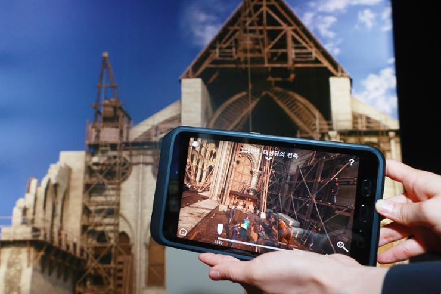
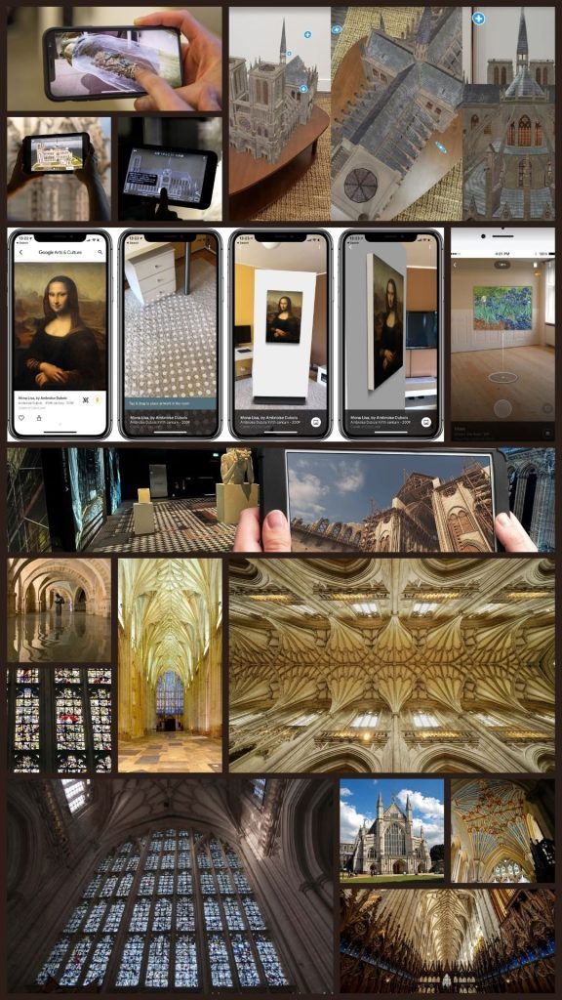
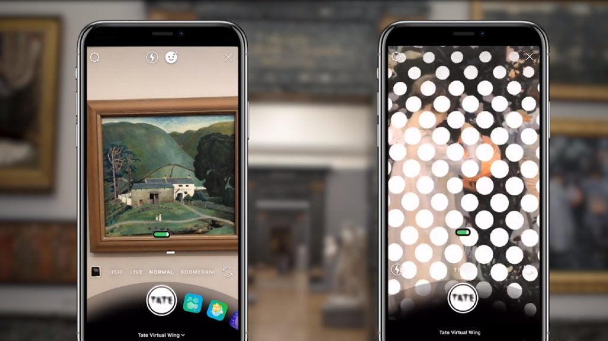
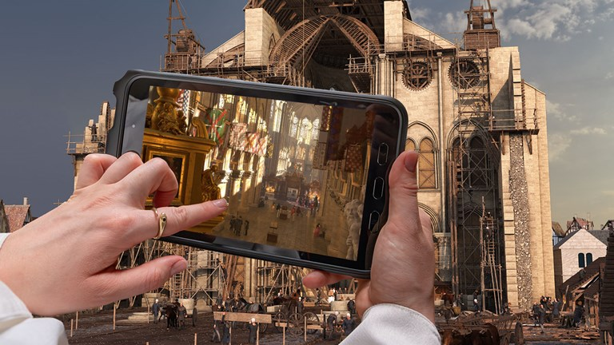
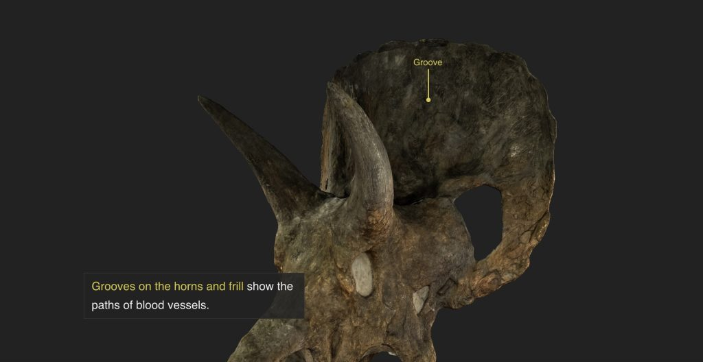
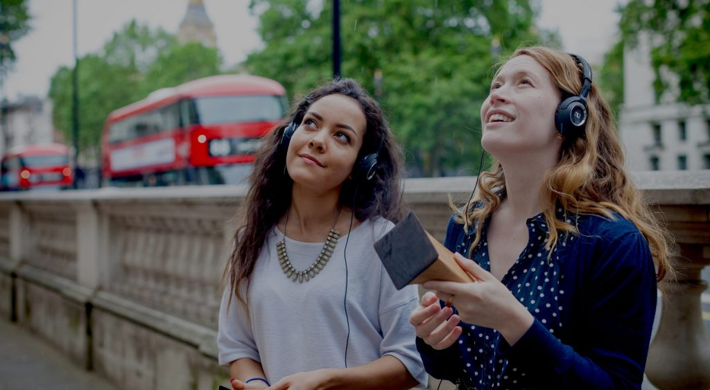
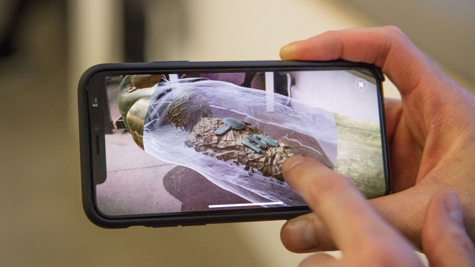
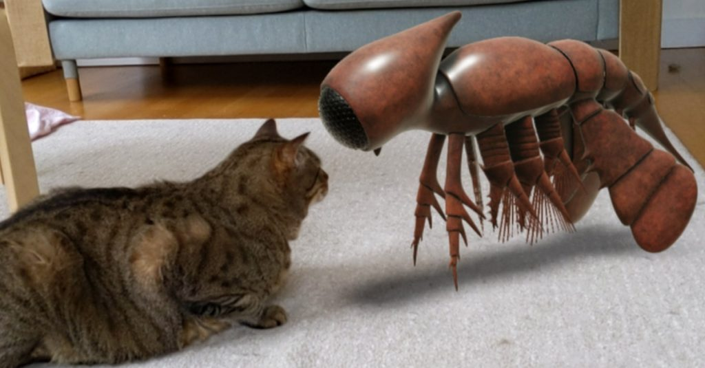
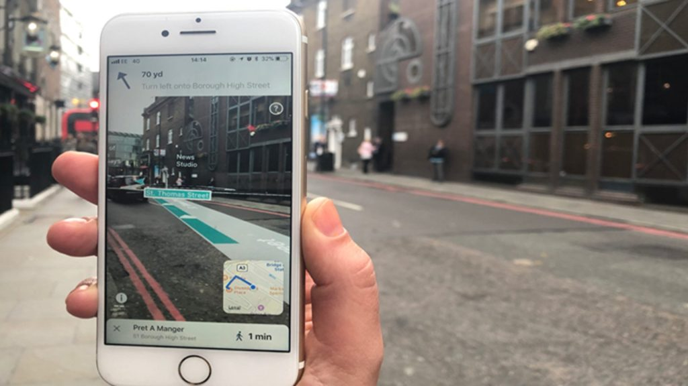
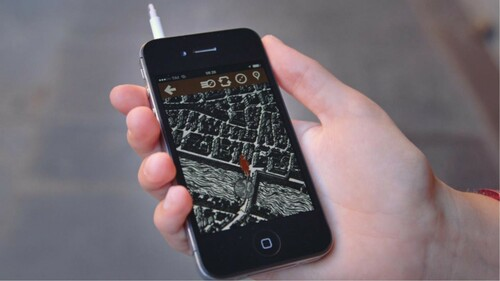

Overview
Initially, I planned to use VR to recreate the architectural evolution of Winchester Cathedral in different historical periods, hoping to enhance the intuitiveness of historical narratives through an immersive experience. However, after further research and planning, I realized that the workload of modeling for the VR project is extremely huge. In particular, recreating the architectural structures and details of different historical stages requires a great deal of time and sophisticated 3D modeling skills. It is very challenging to independently complete the construction of high-quality VR scenes within a short period of time.
In contrast, AR can utilize the existing real-world environment and overlay digital information onto the real world. In this way, it not only reduces the pressure of full-scene 3D modeling but also provides a more flexible interactive experience. Through AR, users can trigger historical content at specific locations in the cathedral, observe the architectural evolution, and learn about key historical events without having to rely entirely on a closed virtual world. This approach is more suitable for short-term development. At the same time, it allows the audience to explore history in the real space, enhancing their sense of connection with the real environment.

A visitor at the “Notre-Dame de Paris, the Augmented Exhibition: 850 Years of History and Resilience at Your Fingertips” uses a tablet device to experience the AR exhibition

My Moodboard integrates historical images of Winchester Cathedral with reference cases of modern Augmented Reality technology, demonstrating my core understanding of the project, which is to make historical and cultural heritage more intuitive, interactive, and immersive through AR technology.
The Moodboard contains pictures of Winchester Cathedral from different perspectives, including its magnificent exterior, delicate Gothic architectural details, and the elements of the stained glass windows inside. These images not only showcase the architectural beauty of the cathedral but also help me think about how to set up interactive points within these spaces, enabling users to gain an in-depth understanding of the evolution and cultural background of the cathedral through AR technology.
I have selected relevant pictures from BBC Civilisations AR and Notre-Dame AR Experience as sources of inspiration. These projects demonstrate how AR technology can be used to make historical heritage more interactive. For example, BBC Civilisations AR digitizes historical artifacts in 3D, allowing users to zoom in, rotate, and explore the details of the artifacts in a real-world environment. The Notre-Dame AR Experience, on the other hand, presents the architectural styles of Notre-Dame de Paris in different periods, making users feel as if they are traveling through time and witnessing the evolution of the building.
Inspirations
Tate Modern’s AR Art Tour

The AR art guided tour at Tate Modern utilizes augmented reality technology, enabling visitors to explore digital artworks within the physical space of the art museum. This has made me realize that AR doesn’t necessarily have to rely entirely on 3D modeling. It can enhance real-world scenes through digital animations, audio commentaries, and interactive overlays. Therefore, my project can adopt a similar approach by adding digital content, such as historical images, animations, or 3D reconstructions, to the real space of Winchester Cathedral, instead of relying completely on 3D modeling.
Notre-Dame AR Experience

The Notre-Dame AR Experience has enabled me to understand that AR can be applied to showcase the evolution of architectural history. For instance, it uses 3D technology to allow users to switch between different timelines and view the changes of Notre-Dame de Paris before and after the fire. This has inspired me that in the project of Winchester Cathedral, users can be given the option to select specific historical periods, such as the Middle Ages, the Gothic expansion period, and the modern restoration period, to observe how the building has changed over time. What’s more, some damaged architectural details, like the past stained glass windows or ceiling decorations, can even be restored through AR.
Smithsonian’s AR T. Rex

The Smithsonian’s AR T-Rex experience uses augmented reality technology to present the dinosaur skeletons in the museum in great detail. This has made me think that in the AR experience of Winchester Cathedral, I can adopt a similar approach to present the architectural structure to visitors more clearly. For example, by zooming in on the architectural details and structures or adding some text descriptions, instead of just providing static information.
Historic Royal Palaces – The Lost Palace

The Lost Palace offers visitors a multi-sensory experience including sound and tactile feedback, enabling them to feel the lost historical space. This has made me realize that AR is not just a visual experience. I can incorporate audio commentaries and ambient sound effects (such as the tolling of bells and the hymns of the choir) at the interactive points in Winchester Cathedral. I can even combine tactile feedback (such as vibrations or subtle sound responses) in certain areas to make the experience more immersive. For example, at the interactive point of Jane Austen’s tombstone, excerpts from her writings during her lifetime can be played to enhance the users’ emotional resonance.
BBC Civilisations AR

The BBC Civilisations AR has made me realize that AR can be used to enable users to “touch” historical artifacts in a real-world environment. For example, in Winchester Cathedral, I can create an AR interactive point. For instance, by presenting a 3D digital version of the Winchester Bible, users can zoom in to examine the details and click on different parts to learn about its historical background. In this way, not only can precious cultural relics be protected, but also the audience can obtain an immersive experience.
Google Arts & Culture – AR Features

The AR function of Google Arts & Culture allows users to view the hidden details of cultural relics, such as the underlying drafts of artworks or what they looked like before restoration. This has made me think that in the AR experience of Winchester Cathedral, I can set up some “perspective” functions. For example, users can be enabled to see the internal structure of the building, the design of the foundation, or the changes of the main hall roof over different time periods. In addition, AR can also be used to display some details of the carvings that are covered or worn out.
AR City Navigation

The AR urban navigation technology can overlay digital information in the real environment, helping tourists to understand the environmental structure more easily. In Winchester Cathedral, I can apply a similar navigation function. For example, when users raise their mobile phones to scan a certain area, information prompts will appear to tell them the historical role of this place. In addition, virtual arrows or paths can be used to guide users to different historical interactive points, optimizing their visiting experience.
The Hidden Florence AR Tour

Hidden Florence allows tourists to experience the urban history from the perspectives of historical figures. For example, they can view the streets as if they were a certain noble in the 16th century. This makes me think that in the AR experience of Winchester Cathedral, I can create some virtual historical figures as narrators. For instance, an 11th – century monk, a 16th – century architect, or even Jane Austen can “appear” to tell their stories. This kind of character – based narrative can make users more immersed and feel the warmth of history.
Ideas
1. Trigger AR historical stories by scanning QR codes
Place QR codes at different locations in the church. After users scan them with their mobile phones, they can watch a historical animation or read a text commentary about that location. For example, when scanning the QR code beside Jane Austen’s tombstone, her virtual image will appear to tell the story of her life. Or, after scanning the QR code in front of the stained glass windows, an AR reconstruction of the original design of the glass will be shown.
2. AR timeline on the touchscreen
Install a simple touchscreen at the entrance of the cathedral. Users can slide the timeline to see the architectural changes of the cathedral in different periods. The changes in each period can be displayed in the form of pictures or animations. For example, when “1066” is selected, the appearance of the church in the Norman period will be shown on the screen. When “the 14th century” is selected, an animation of the Gothic-style renovation will be displayed.
3. AR model projection (simple 3D display)
Users scan a specific marker (such as a point on the church map) with the camera of their mobile phones, and a small 3D model will appear on the screen. For example, a 3D page-turning animation of the Winchester Bible, a 3D perspective view of the roof structure of the main hall, or some signs that can guide tourists to visit the church.
Reference
Park, J. (2024) ‘Immersive AR exhibition brings Notre-Dame de Paris to Seoul’, The Korea Times, 1 July. Available at: https://www.koreatimes.co.kr/www/art/2025/03/398_377802.html (Accessed: 3 March 2025).
Notre-Dame Expo (n.d.) Eternal Notre-Dame. Available at: https://notredameexpo.com/en/ (Accessed: 3 March 2025).
Tate Britain (2019) The Tate Britain uses AR to bring its paintings to life. Available at: https://www.branding.news/2019/09/12/the-tate-britain-uses-ar-to-bring-its-paintings-to-life/ (Accessed: 3 March 2025).
Museums Victoria (n.d.) Notre-Dame de Paris: The Augmented Exhibition. Available at: https://museumsvictoria.com.au/immigrationmuseum/whats-on/notre-dame-de-paris-the-augmented-exhibition/ (Accessed: 4 March 2025).
The Washington Post (2018) See a T. rex in your living room with augmented reality. Available at: https://www.washingtonpost.com/graphics/2018/national/smithsonian-dinosaur-augmented-reality/ (Accessed: 4 March 2025).
Calvium (n.d.) The Lost Palace. Available at: https://calvium.com/projects/the-lost-palace/ (Accessed: 4 March 2025).
BBC (n.d.) Civilisations AR. Available at: https://www.bbc.co.uk/taster/pilots/civilisations-ar (Accessed: 4 March 2025).
Google Arts & Culture (n.d.) AR. Available at: https://artsandculture.google.com/project/ar (Accessed: 4 March 2025).
Pereira, M. (2020) ‘Use the Google Arts & Culture app to explore AR museum exhibits’, The Next Web, 10 January. Available at: https://thenextweb.com/news/use-google-arts-culture-app-ar-museum-exhibits (Accessed: 13 March 2025).
Blippar (2017) ‘Welcome to AR city: The future of maps and navigation’, Blippar Blog, 6 November. Available at: https://www.blippar.com/blog/2017/11/06/welcome-ar-city-future-maps-and-navigation (Accessed: 13 March 2025).
Gómez, F. (2022) ‘The use of augmented reality in cultural heritage: Enhancing visitor experience through digital technology’, Journal of Cultural Heritage Management and Sustainable Development, 12(4), pp. 502-519. Available at: https://www.tandfonline.com/doi/full/10.1080/1743873X.2022.2036165 (Accessed: 13 March 2025).